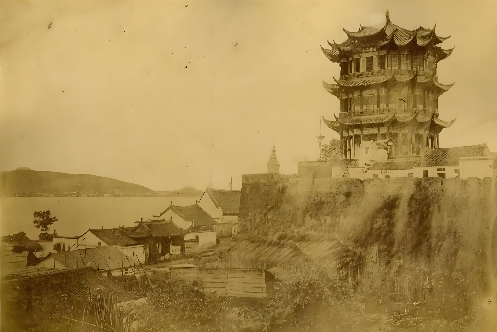
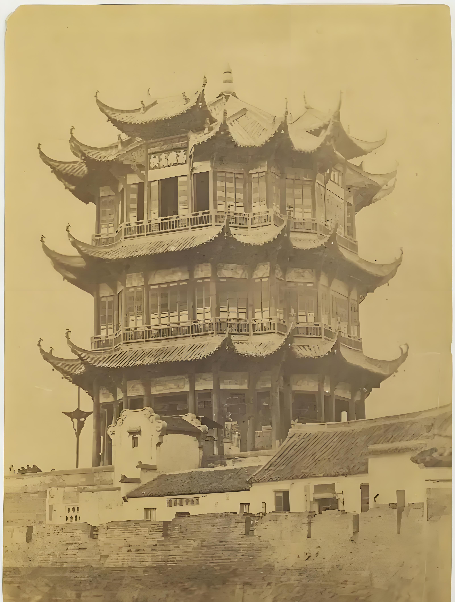
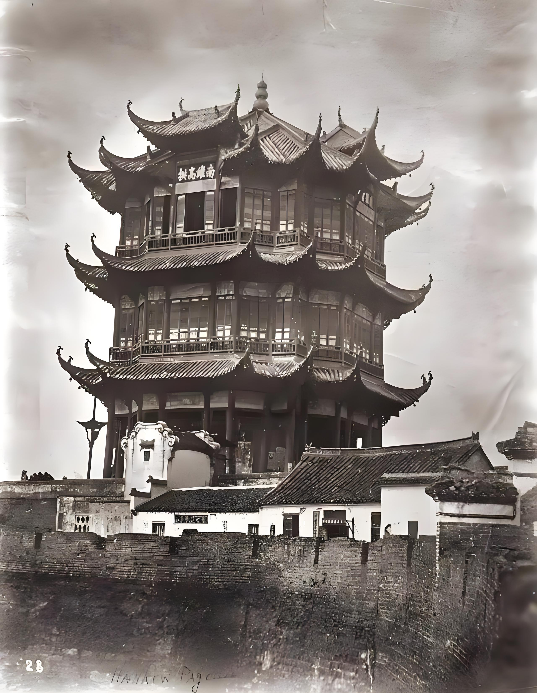
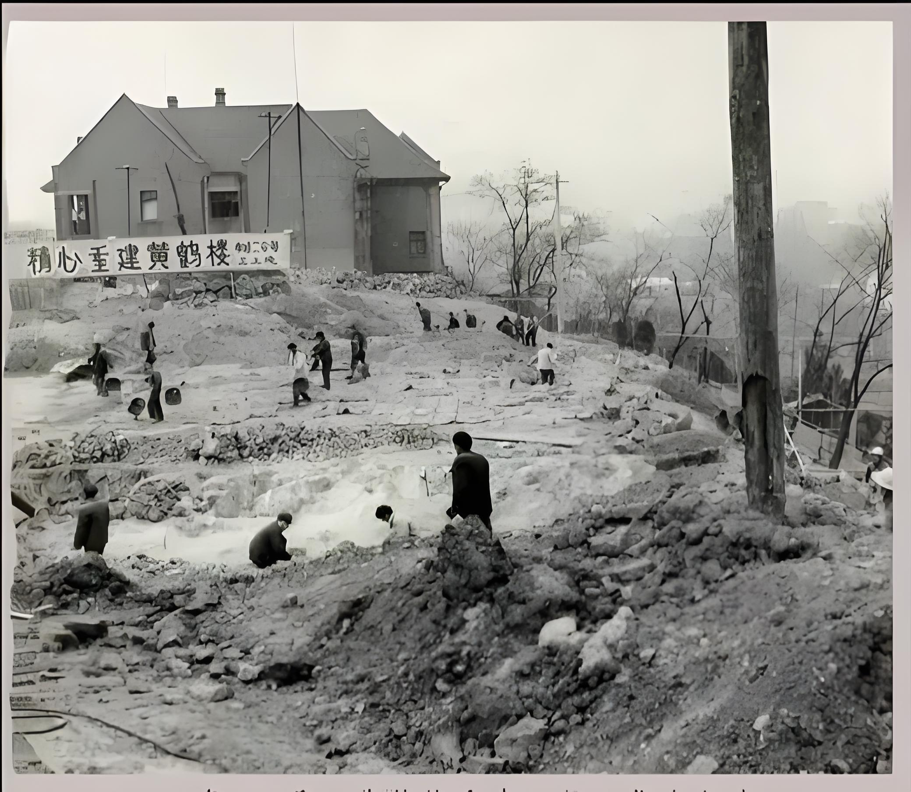

223 始建三國時期
公元223年，黃鶴樓始建於三國吳黃武二年，作為軍事瞭望與觀景之地，成為長江南岸的重要地標。

876 唐代詩人留名
公元876年，唐代詩人崔顥、李白等人在此留下千古詩篇，黃鶴樓聲名遠播，成為文人墨客心中的聖地。

1884 清代重建
1884年，黃鶴樓在清光緒年間重建，樓宇恢宏，成為武漢城的重要象徵。

1957 舊樓拆除
1957年，因年久失修及城市建設需要，黃鶴樓舊樓被拆除，成為一代人心中的遺憾。

1985 新樓落成
1985年，黃鶴樓新樓在原址附近重建落成，恢復歷史風貌，成為武漢最著名的文化地標。